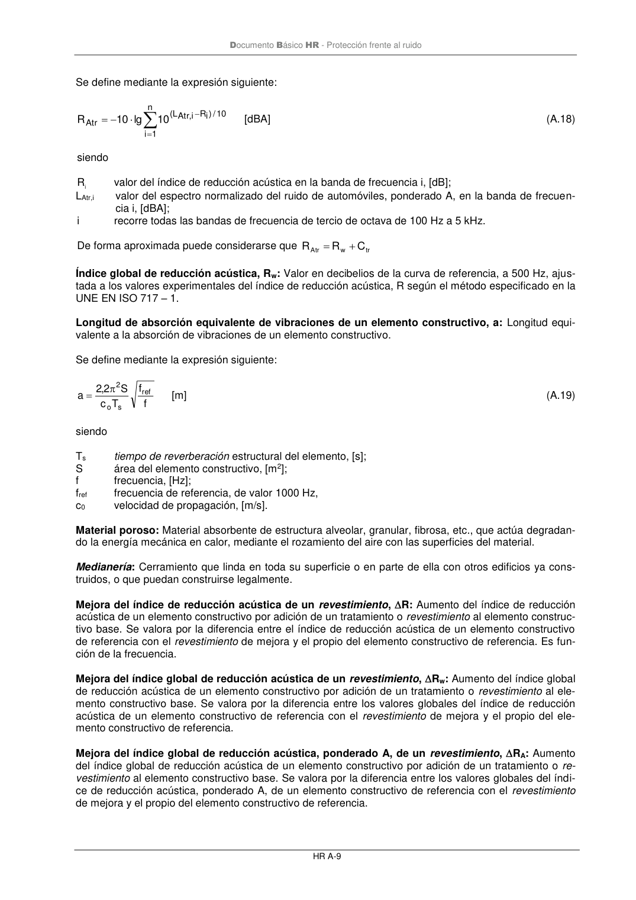

DB-HR Protección frente al ruido · edición 2019-12-20 · capa oficial
Documento DB-HR-oficial · SHA-256 del PDF a67baeca5138bb1f121f797d23a79a4557bd9ac4abacd954024893e05411eeab
Copia fiel del PDF fuente · Fuente oficial
Ficha de la disposición en la fuente oficial
Formatos: JSON del segmento · Markdown
Documento Básico HR - Protección frente al ruido HR A-9 Se define mediante la expresión siguiente: = − − = n 1 i 10 /)i R i, Atr L ( Atr 10 lg 10 R [dBA] (A.18) siendo Ri valor del índice de reducción acústica en la banda de frecuencia i, [dB]; LAtr,i valor del espectro normalizado del ruido de automóviles, ponderado A, en la banda de frecuen- cia i, [dBA]; i recorre todas las bandas de frecuencia de tercio de octava de 100 Hz a 5 kHz. De forma aproximada puede considerarse que tr w Atr C R R + = Índice global de reducción acústica, Rw: Valor en decibelios de la curva de referencia, a 500 Hz, ajus- tada a los valores experimentales del índice de reducción acústica, R según el método especificado en la UNE EN ISO 717 – 1. Longitud de absorción equivalente de vibraciones de un elemento constructivo, a: Longitud equi- valente a la absorción de vibraciones de un elemento constructivo. Se define mediante la expresión siguiente: f f T c S 2,2 a ref s o 2 = [m] (A.19) siendo Ts tiempo de reverberación estructural del elemento, [s]; S área del elemento constructivo, [m2]; f frecuencia, [Hz]; fref frecuencia de referencia, de valor 1000 Hz, c0 velocidad de propagación, [m/s]. Material poroso: Material absorbente de estructura alveolar, granular, fibrosa, etc., que actúa degradan- do la energía mecánica en calor, mediante el rozamiento del aire con las superficies del material. Medianería: Cerramiento que linda en toda su superficie o en parte de ella con otros edificios ya cons- truidos, o que puedan construirse legalmente. Mejora del índice de reducción acústica de un revestimiento, R: Aumento del índice de reducción acústica de un elemento constructivo por adición de un tratamiento o revestimiento al elemento construc- tivo base. Se valora por la diferencia entre el índice de reducción acústica de un elemento constructivo de referencia con el revestimiento de mejora y el propio del elemento constructivo de referencia. Es fun- ción de la frecuencia. Mejora del índice global de reducción acústica de un revestimiento, Rw: Aumento del índice global de reducción acústica de un elemento constructivo por adición de un tratamiento o revestimiento al ele- mento constructivo base. Se valora por la diferencia entre los valores globales del índice de reducción acústica de un elemento constructivo de referencia con el revestimiento de mejora y el propio del ele- mento constructivo de referencia. Mejora del índice global de reducción acústica, ponderado A, de un revestimiento, RA: Aumento del índice global de reducción acústica de un elemento constructivo por adición de un tratamiento o re- vestimiento al elemento constructivo base. Se valora por la diferencia entre los valores globales del índi- ce de reducción acústica, ponderado A, de un elemento constructivo de referencia con el revestimiento de mejora y el propio del elemento constructivo de referencia.
